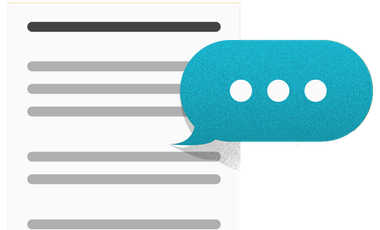
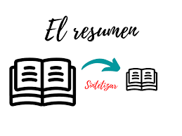
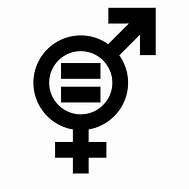
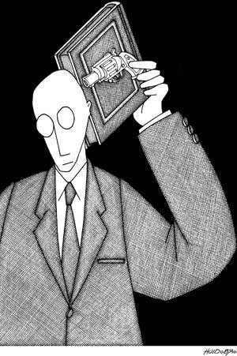
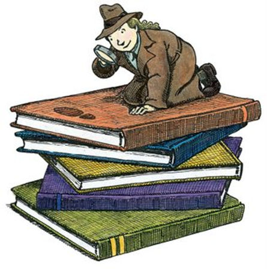

TEXTOS ARGUMENTATIVOS
Son aquellos que expresan opiniones, ideas y posturas sobre un tema en particular con el objetivo de persuadir al lector.
Estos textos se utilizan ampliamente en el ámbito periodístico, científico, judicial, filosófico y publicitario.
Caracteristicas:
- Finalidad comunicativa: El texto argumentativo busca transmitir una postura u opinión respaldada por fundamentos a favor o en contra de un tema.
- Estructura:
Se compone de tres partes:
- Introducción: Presenta el tema y la tesis, captando la atención del lector. La tesis debe dejar clara la postura que el autor va a defender.
- Argumentación: Desarrolla los argumentos que respaldan la tesis.
- Conclusión: Resume los puntos clave y refuerza la postura del autor.
- Conectores textuales: Se utilizan para enlazar la información de manera coherente entre las partes del texto (por tanto, en consecuencia, sin embargo, etc.).
- Tipos de argumentos:
- Deductivos: Una premisa general conduce a una conclusión específica.
- Inductivos:La premisa surge de la experiencia y su conclusión es una generalización.
- Abductivos:Plantea una premisa e hipótesis que deben ser explicadas.
- Razonamiento lógico: Proposiciones verdaderas que conducen a conclusiones verdaderas.
- Autoridad:Afirmación sostenida por una persona especialista o experta.
- Analogía: Utiliza casos semejantes para argumentar.
- Probabilidad: Se vale de datos estadísticos.
- Afectivos: Recurren a los sentimientos para emocionar al lector.

¿QUE ES UN RESUMEN?
Un resumen es una versión concisa y abreviada de un texto más largo. Su objetivo es presentar las ideas principales y los puntos clave sin entrar en detalles. Los resúmenes son útiles para comprender rápidamente el contenido de un documento sin leerlo.
El resumen deberá ser una síntesis breve y global de los avances del estudio que se esté realizando que permita a su vez, que los revisores evalúen los contenidos del estudio de manera rápida y puedan emitir su dictamen. El resumen deberá contener entre 250 y 300 palabras.

¿QUE ES IGUALDAD DE GENERO?
- La igualdad de género o equidad de género implica que todas las personas tengan los mismos derechos, recursos y oportunidades, independientemente de su identidad de género. Esto se aplica en todos los aspectos de la vida cotidiana, como el trabajo, la salud y la educación
- A nivel mundial, lograr la igualdad de género también implica eliminar prácticas dañinas contra las mujeres y las niñas, como el tráfico sexual, el feminicidio y la violencia sexual durante la guerra
- Las desigualdades de género se manifiestan en áreas como la educación, la brecha salarial, la propiedad de tierras y la mutilación genital femenina

CARACTERISTICAS DE LA RESEÑA
Una reseña es un análisis crítico y evaluativo de un libro, película, obra de arte u otro tipo de obra. Algunas características de una buena reseña incluyen:
- Objetividad: La reseña debe ser imparcial y basarse en hechos.
- Síntesis: Debe resumir los aspectos más importantes de la obra.
- Argumentación: Debe presentar argumentos sólidos para respaldar las opiniones expresadas.
- Contextualización: Es importante situar la obra dentro de su contexto (por ejemplo, género literario, época, autor, etc.).

RESEÑA CRITICA
Una reseña crítica va más allá de la simple descripción y evaluación. Además de resumir la obra, también analiza sus aspectos positivos y negativos de manera profunda. En una reseña crítica, el autor puede expresar su opinión personal y cuestionar elementos específicos de la obra.
